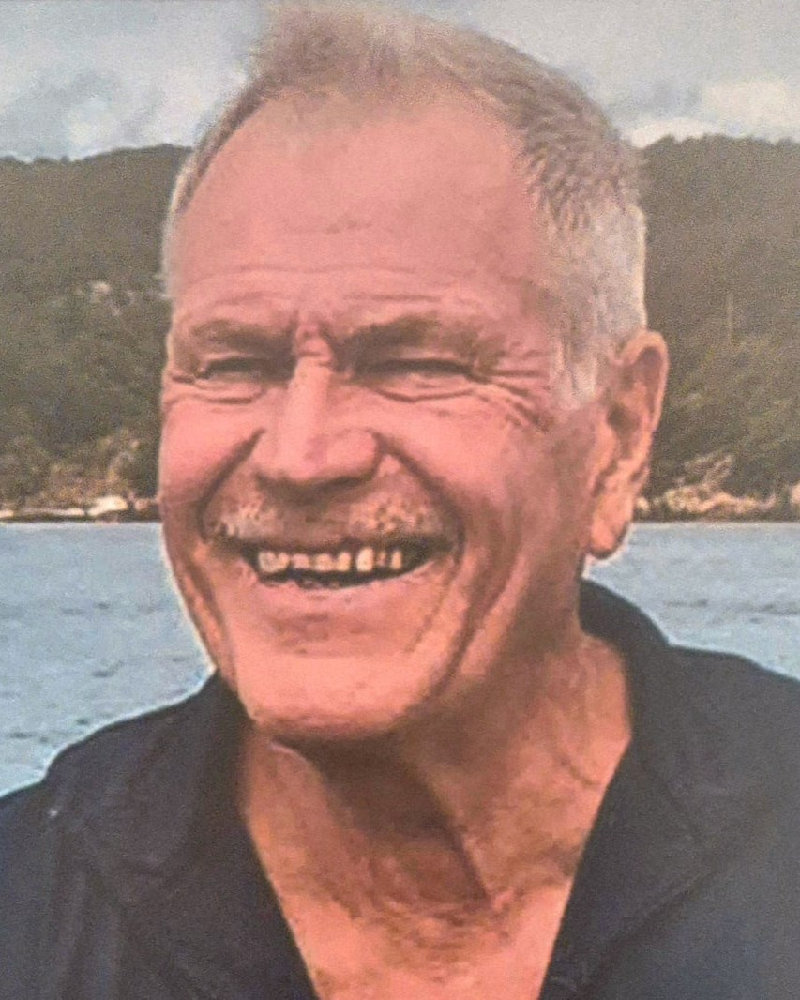

Vår gode tenniskamerat Helge Fjermeros, født 19.06.42, gikk bort 30. desember. Dermed står mange venner i Danmark og Norge tilbake med et stort savn og mange gode minner om kamper i Tune og Greve og Hedehusene TK ved København og KTK i Kristiansand. Rundt om i Norge og i Norden ellers føler også mange jaktkamerater savnet av jakt på elg, villsvin og and og hygge med Helge. Og med dansk kjæreste, Kirsten, i 22 år var det naturlig at urnen hans fant sitt sted på Tune og Oddernes kirkegård. Begge steder med vakker urneseremoni og minnestund. Trimglade Helge hadde hatt trøbbel med hjertet gjennom livet, men alltid kommet tilbake i god vigør. Sønnene Arne og Ivar, de og tenniskamerater, var hos sin gode pappa og tok farvel da han rolig sovnet inn hos sin Kirsten i København.
Helge Fjermeros var ekte sørlending. Som skipstelegrafist med tjeneste i marinen nøt han sjølivet og mange destinasjoner verden rundt. Han savnet sin far Randulf Fjermeros som kom på Møllergata 19 i 1944 da Helge var 2 år, og samme året gikk ned med fangeskipet D/S Westfalen. Helge hadde likevel en lykkelig oppvekst hos sin mor, eldre bror og fars- og morsslekten. Som familien Helge, Mari og barna, og også Kirsten, alltid har hatt så god kontakt med. Helges hytte på Langøy ved Tregde, med motorbåt og Oslojolle, ble et sted å møtes til fest og sjøliv med Helge som jovial vert

Så døde Mari av kreft bare 38 år gammel. Det var etter det tapet at Helge bare måtte starte på nytt og flyttet til København og traff Kirsten. Han solgte sitt livsverk Wolf Motor som importerte deler fra hele Europa for salg til verksteder over hele Norge. Før Wolf eide han Enøk i Tollbodgaten. Helge var innovativ og kreativ og representativ og sosial og ønsket alltid å være sin egen sjef. Et gyllent år i familien Fjermeros liv var et år i Santa Barbara i California.
Med Helges bortgang mistet også åtte barnebarn og tre oldebarn en praktisk anlagt og munter og omsorgsfull farfar og oldefar. Også Gabriel Scott Selskabet en god venn som hadde lest alle Scotts bøker og hadde sans for dikterens og ikke minst fiskeren Markus sin gode livsfilosofi.
Thor Einar Hanisch